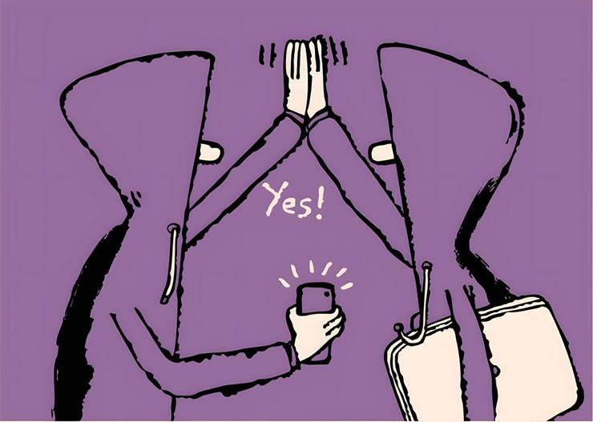

You know what’s really interesting about this Coldplay couple story,’ a colleague said to me the other day.
I very much doubted I would know.
We were speaking nearly a week after Andy Byron, the chief executive of tech company Astronomer, was caught on a giant video screen at a Coldplay concert in Boston with his arms around a woman who was a) his head of HR and b) not his wife.
Byron had by then been a top-trending Google topic from Australia to Albania and it seemed unlikely there was anything compelling left to say about him. But my colleague made a good point: for those of us who deal with the vast corporate PR industrial complex, it was notable to watch a top executive fall so comprehensively that no amount of fudging obfuscation could save him.
That would make it unusual in a world where media enquiries about corporate impropriety, no matter how well based, are often met with a “no comment’, a huffy denial or a threat of legal action.
It’s been like this for years, as a lay-off strewn news industry continues to confront a far more buoyant public relations sector. In the US alone there were nearly five PR people for every journalist in 2013 and by some counts, the ratio has since widened.
There are, of course, a lot of decent PR professionals and yes, journalists have long been among the least trusted people. Though a 2024 global survey does suggest we are doing better than politicians and are level with bankers and, as it happens, business leaders. This improvement is welcome because the Coldplay affair underlines another critical point: the need for robust journalism in an age of rampant and grimly effective fake social media “news”.
One of the most notable aspects of the incident was the spread of fabricated online statements purporting to be from those involved.
Contrary to what you might have read (and may still believe), Byron did not say he found it troubling that “what should have been a private moment became public without my consent”. His wife did not post a tearful statement about the scandal. Coldplay did not say it would now have camera-free audience sections for people and their “sidepieces”. And the red-faced woman filmed standing next to the couple was not another Astronomer employee named Alyssa.
This avalanche of online tripe was so gigantic that Astronomer had to address it head-on. “Alyssa Stoddard was not at the event and no other employees were in the video,” it said in a statement. “Andy Byron has not put out any statement, reports saying otherwise are all incorrect.”
Alas, this came too late for some newspapers, which reported Byron’s statement as fact. On the upside, proper news outlets corrected the error. But don’t expect that from the hoaxers, nor the social media sites that hosted their nonsense. And here is the serious point. Coldplay-gate doubtless caused hurt for those at the centre of it and their families. But so far, the hoaxes it spurred have been relatively harmless compared with the plethora of online scams that continue to go unchecked.
Just in the EU, the latest figures show internet fraudsters swindled people out of €4.3bn in 2022. Since then there has been an explosion of AI tools that help scammers make cheap and convincing fake videos of financial experts to lure consumers into making dodgy investments or disclosing data.
Social media companies insist they remove adverts for this rot and try to stay ahead of the fakers. But as my colleague Martin Wolf wrote after discovering his identity had been faked, it is hard to believe tech giants, with all their resources, cannot do better. The same goes for all the other unfettered online harm. Some governments are trying to legislate, notably in the EU. The Coldplay couple — and the misleading maelstrom that followed their exposure — are a reminder more need to join them.